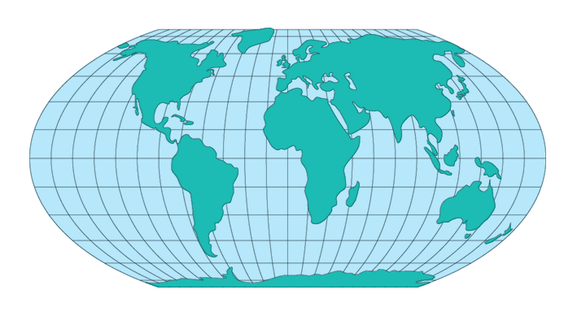

Meridians: The central meridian is a straight line that is half as long as the Equator. The other meridians are equally spaced portions of ellipses (less than semiellipses) that would intersect beyond the poles and are concave toward the central meridian. The meridians at 103°55’ east and west of the central meridian are circular arcs.
Parallels: The parallels are unequally spaced straight parallel lines whose widest separation is near the Equator. They are perpendicular to the central meridian.
Poles: Lines that are half as long as the Equator.
Symmetry: There is symmetry about the central meridian or the Equator.
Distortion is not as extreme near the outer meridians at high latitudes as it is on pointed-polar pseudocylindrical projections, but there is considerable distortion throughout polar regions. It is free of distortion only at latitudes 42°59’ N. and S. on the central meridian.
The scale is true along latitudes 42°59’ N. and S., and constant along any given latitude.
*Usage information source:
Snyder, John P., and Philip M. Voxland. Map Projections - A Working Manual. U.S. Geological Survey Professional Paper 1453. Washington: United States Government Printing Office, 1994.